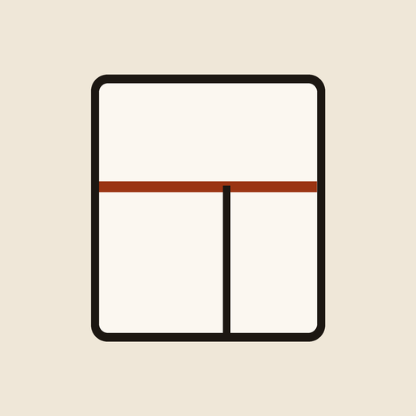

Plano de Corte MDF
Otimizador de corte de chapas de MDF e MDP para quem corta na própria oficina.
Cadastre as peças e as chapas do móvel. O app calcula o plano de corte em guilhotina, desenha cada chapa, salva tudo no celular e gera um PDF para mandar pelo WhatsApp.
- Chapas no tamanho brasileiro (por exemplo 2750 × 1850 mm), espessura da serra e refilo.
- Veio da peça e fita de borda.
- Funciona sem internet e não pede conta nem login.
- Cópia de segurança em arquivo para trocar de celular sem perder os projetos.
- Grátis com até 3 projetos. O Pro libera projetos sem limite e coloca o nome e o logo da oficina no PDF.
Suporte
Dúvidas, sugestões ou problemas: rafaeldecarvalho.ps@gmail.com
Privacidade
O app não coleta dados pessoais. Os projetos ficam só no seu aparelho. Leia a Política de Privacidade.